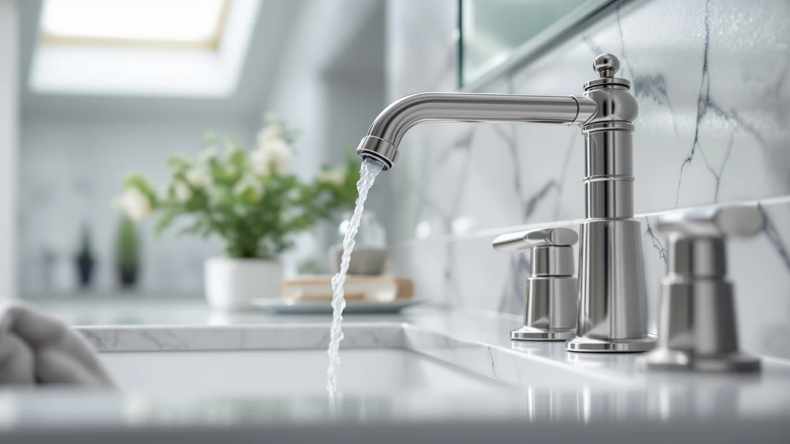

Single-Handle vs. Two-Handle Bathroom Faucets: Which Should You Buy? (2026)


Things to Know Before You Buy
- Count the holes on your current sink before you shop. A single-handle faucet needs one hole, and a two-handle faucet needs three, spaced either 4 inches (centerset) or 8 inches (widespread) apart.
- Single-handle faucets cost less on average and install in under an hour, since there is one body and one supply connection to seal.
- Two-handle faucets let you set hot and cold independently, a detail some households weigh over speed in the single handle vs two handle bathroom faucet debate.
- Ceramic-disc cartridges show up in both styles now, so long-term drip resistance depends more on cartridge quality than handle count.
- Widespread two-handle sets typically run $15 to $30 more than a comparable single-handle model, mostly for the extra hardware and supply lines.
The single handle vs two handle bathroom faucet decision is the first fork in the road for most vanity remodels, and it usually comes down to how your sink is already drilled. One handle blends hot and cold in a single lever, while two handles give you a dedicated control for each temperature, and the sink you already own often narrows the choice before price or style even enter the picture.
This guide breaks down where each style wins on installation, price, build, and daily use, and which sink setups make the decision for you before you get to finish or looks. We compared specs and verified owner feedback across single-handle and two-handle faucets to show where each format has a real edge, not just where it looks different on the shelf.
Quick Answer
For most bathrooms, a single-handle faucet like the Ryuwanku or Pfister Parisa is the easier and cheaper pick, especially if your sink already has one hole and you want fast, one-motion control. Choose a two-handle faucet, such as the Pfister Pasadena or Moen Ronan, when your vanity is already drilled for a widespread set or you want independent, precise control over hot and cold. Neither style wins on durability or water pressure; the single handle vs two handle bathroom faucet choice comes down to your sink's existing holes and how much control you want over temperature.
What is Single Handle?
A single-handle bathroom faucet routes hot and cold water through one lever mounted on top of, or beside, the spout. Moving the handle side to side sets temperature, and up or down sets flow, so you make both adjustments with one hand. Most single-handle models install through a single hole, which is why plumbers count them among the fastest fixtures to swap during a bathroom remodel. Inside the body, a cartridge, usually ceramic disc, mixes the two supply lines before water reaches the spout, so blending happens inside the faucet rather than at two separate valves.
This design keeps the footprint on your counter to one opening, which matters if you're working with a compact vanity or a pedestal sink that only has room for a single cutout. The Ryuwanku matte black model and the Pfister Parisa both use this layout, and each keeps installation down to one supply connection per line rather than the three a widespread set requires. In the broader single handle vs two handle bathroom faucet decision, single-handle models tend to win on speed of use, since you never reach for a second control, and on install time, since there's only one base to seal and level.
What is Two Handle?
A two-handle bathroom faucet separates hot and cold into their own valves, either as a centerset (three holes about 4 inches apart on one base) or a widespread (three separate pieces, holes 8 inches or more apart). You turn one handle to add hot water and the other to add cold, and the two streams meet at the spout. Because each side runs through its own valve, you can dial in an exact temperature by feel, which some households prefer for shallow basin fills where a slight overshoot from a single lever is more noticeable.
Two-handle faucets also read as more traditional. The Pfister Pasadena and Moen Ronan in this guide both use a widespread layout with an 8-inch handle-to-handle spread, a look that fits transitional and classic bathroom styles better than a streamlined single-lever body. The tradeoff shows up during installation: a widespread set means three separate bases to position, level, and connect, against one for a single-handle faucet. That extra hardware is the main cost and labor difference in the single handle vs two handle bathroom faucet comparison, and it's worth knowing before you commit to a wider vanity layout.
Head-to-Head: Build Quality & Durability
Build quality in both styles depends more on the cartridge than the handle count. Ceramic-disc cartridges, standard across most faucets in this guide including the Moen Idora and Delta Arvo, resist mineral buildup and rarely drip after years of daily use. A single-handle faucet has one cartridge doing double duty for hot and cold, so if it wears out, the whole mixing mechanism needs replacing. A two-handle faucet splits that risk across two independent cartridges, one per valve, so a failure on one side doesn't take down your only temperature control; you can still run water from the other handle while you source a replacement part.
Finish durability tracks the coating, not the handle configuration. Spot-resist brushed nickel, used on the Moen Idora and Moen Ronan, holds up better against water spots and fingerprints than plain chrome, while the matte black finish on the Ryuwanku faucet shows scratches more visibly if you're rough with cleaning tools. Widespread two-handle sets have more exposed connection points under the sink, meaning more places for a supply line to loosen over time, though that's a maintenance detail rather than a durability flaw. Neither format has an inherent lifespan advantage; finish and cartridge quality decide that in the single handle vs two handle bathroom faucet build comparison.
Head-to-Head: Price & Value
Price tracks configuration more than handle count directly. Among the faucets covered here, single-handle models run from $28.99 for the Ryuwanku up to $59.30 for the Pfister Parisa, while two-handle widespread faucets start around $38.99 for the Fransiton and reach $110.60 for the Moen Ronan. The extra cost for two-handle designs comes from the additional hardware, three bases and escutcheon plates instead of one, plus more finish area to plate and polish. Installation cost follows the same pattern if you're hiring a plumber, since a widespread swap takes longer on the clock than a single-hole job. For most budgets, a single-handle faucet is the cheaper way in and the cheaper way to replace later, which is the deciding factor for a lot of shoppers weighing single handle vs two handle bathroom faucet pricing on a renovation budget.
Head-to-Head: Use Experience
Day to day, the biggest difference is how many motions it takes to get water at the temperature you want. A single-handle faucet lets you set flow and temperature in one motion, which owners consistently point to as the faster option for quick hand washes or brushing teeth. Reviewers of the GBBNE waterfall model note that the single lever makes one-handed operation easy when your other hand is full, a small but real convenience during a busy morning routine.
Two-handle faucets ask for two motions, but they reward precision. Because each valve controls only hot or only cold, you can nudge the temperature a few degrees without disturbing the flow rate, something a single lever can't do as cleanly since moving it side to side often changes both at once. Owners of widespread models like the Pfister Pasadena report this matters most for filling a basin to an exact temperature rather than for a quick rinse. Neither faucet type has an edge on water pressure or spout reach, since those depend on the aerator and spout design rather than the handle configuration. The single handle vs two handle bathroom faucet gap in daily use comes down to whether you value speed or fine control more.
When to Choose Single Handle
Choose a single-handle faucet if your sink already has one hole, since that's the fastest and cheapest match with no deck plate or extra drilling required. It's also the better call for a compact powder room, a rental where install time is billed by the hour, or a household with kids or older adults who benefit from one-motion operation instead of coordinating two handles. If you're replacing a faucet yourself, a single-handle model means one supply connection per line and one base to seal, which cuts a weekend project down closer to an afternoon. Anyone prioritizing a clean, minimal look on a small vanity will also lean toward this style, since it leaves more visible counter space around the spout. In the single handle vs two handle bathroom faucet decision, this is the default pick for most primary and guest bathrooms.
When to Choose Two Handle
Choose a two-handle faucet if your sink is already drilled for three holes 8 inches apart, since re-drilling a widespread cutout down to a single hole isn't practical on most sinks. It also suits anyone who wants precise, independent temperature control, households sharing one basin where members prefer different water temperatures, or a wide vanity where a widespread set fills the counter proportionally better than a single narrow body. If your bathroom leans traditional or transitional in style, separated handles read as more classic than a streamlined single-lever spout. Budget for a longer install window and a few more dollars in parts, since three bases and extra supply connections add time either way. For anyone comparing single handle vs two handle bathroom faucet options on a wide, already-drilled vanity, two-handle is usually the better structural fit.
Our Top Picks
If you're leaning single-handle after weighing the single handle vs two handle bathroom faucet tradeoffs above, these three are worth a closer look, ranked from best all-around value to premium build.

Editor's Pick
Ryuwanku Bathroom Faucet Matte Black
The cheapest way into single-handle simplicity, with a matte black finish that fits most modern vanities.
$28.99
Check Price on Amazon
Best Value
Pfister Parisa Single Handle Bathroom
A step up in cartridge quality from Pfister, priced right for replacing a worn single-handle faucet.
$59.30
Check Price on Amazon
Premium Choice
GBBNE Waterfall Bathroom Faucet 1
A waterfall spout adds a premium look to the single-handle format without the cost of a widespread set.
$34.18
Check Price on AmazonFrequently Asked Questions
Is a single-handle or two-handle bathroom faucet better?
Neither is better across the board. A single-handle faucet is cheaper, faster to install, and easier to operate one-handed, while a two-handle faucet gives you independent control over hot and cold and often matches a traditional bathroom style. In the single handle vs two handle bathroom faucet decision, the better fit depends on how your sink is already drilled and which control style you prefer.
Can I replace a two-handle faucet with a single-handle one?
Only if your sink has, or can be adapted to, a single hole. Most single-handle faucets ship with a deck plate that covers the two outer holes on a standard 4-inch three-hole sink, so you can often swap a centerset two-handle faucet for a single-handle model without drilling. A widespread sink, with holes 8 inches or more apart, usually needs a wider deck plate or a matching widespread single-handle kit.
Do two-handle faucets leak more than single-handle faucets?
Not inherently. Leak risk comes down to cartridge or valve quality and how well the faucet was installed, not the number of handles. Ceramic-disc valves, used in both single- and two-handle models in this guide, resist the mineral buildup that causes most long-term drips.
Which style is easier to install, single-handle or two-handle?
Single-handle faucets are faster to install because there is one body, one base to seal, and one supply connection per line. Two-handle widespread faucets take longer since you're positioning, leveling, and connecting three separate pieces under the sink, which typically adds thirty to forty-five minutes to the job.
Does a two-handle faucet save water compared to a single-handle faucet?
No, water use depends on the aerator's flow rate, not the handle count. Both single- and two-handle faucets in this comparison use standard 1.2 gallon-per-minute aerators, so neither format saves water on its own.
Final Verdict
The single handle vs two handle bathroom faucet decision comes down to your sink's existing holes and how much control you want at the tap, not which style is objectively better. If you want the simplest, cheapest way to a reliable upgrade, the single-handle Ryuwanku is the pick to start with, since it installs through one hole and needs no extra hardware. Choose a two-handle model like the Pfister Pasadena instead if your vanity is already drilled for a widespread set or you want separate hot and cold control. Either way, cartridge quality matters more than handle count for how long the faucet lasts.